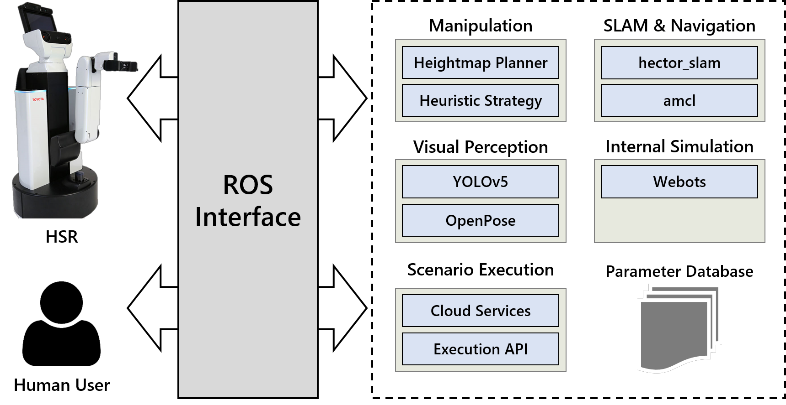

Team TIDYBOY
Biointelligence Lab, Seoul National University
Team TIDYBOY website

Team TIDYBOY is a RoboCup@Home DSPL & RoboCup@Home OPL team that consists of members from Seoul National University & Pusan National University.
We have participated in recent international service robotic competitions using the Toyota HSR platform with good results.
Especially, we won 2nd place in the RoboCup@Home 2022 DSPL and won two major competitions in 2021, the RoboCup@Home Virtual 2021 DSPL and the World Robot Summit 2020 Partner Robot Challenge [Real Space] remote participation league. In addition to these competitions using HSR platform, we also have extensive expertise with other robotic platforms as well, including RoboCup@Home SSPL and R-biz Challenge.
Furthermore, we have a strong research experience in state-of-the-art machine learning methods applied to various robotics problems.
In this project, we aim to develop intelligent mobile cognitive robots with a novel architecture based on machine learning. We envision a new paradigm of autonomous AI with state-of-the-art self-supervised machine learning methods to overcome more restricted paradigms of classical AI which use top-down/rule-driven symbolic and bottom-up/data-driven statistical systems. Inspired by human brain process, we propose an architecture which combines deep learning models with memory models to enable the robot to learn more rapidly, flexibly, and robustly in real-world environments. We investigate these autonomous learning algorithms and demonstrate their capability on mobile robot platforms in real home environment settings. With the proposed architecture, we enhance functions of mobile home service cognitive robots by developing technologies such as navigation, concept building, object recognition and schedule learning.
In this project, we aim to develop intelligent mobile cognitive robots with a novel architecture based on machine learning. We envision a new paradigm of autonomous AI with state-of-the-art self-supervised machine learning methods to overcome more restricted paradigms of classical AI which use top-down/rule-driven symbolic and bottom-up/data-driven statistical systems. Inspired by human brain process, we propose an architecture which combines deep learning models with memory models to enable the robot to learn more rapidly, flexibly, and robustly in real-world environments. We investigate these autonomous learning algorithms and demonstrate their capability on mobile robot platforms in real home environment settings. With the proposed architecture, we enhance functions of mobile home service cognitive robots by developing technologies such as navigation, concept building, object recognition and schedule learning.